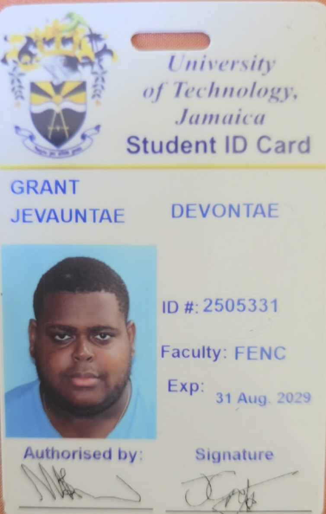

Welcome to My Portfolio
BSc Computing Student
Hello! My name is Jevauntae Grant, and I am a Computing student at the University of Technology, Jamaica. This portfolio showcases my professional experience, personality, interests, and personal development.
I am interested in technology, programming, problem solving, and learning how technology can be used to create useful solutions.
Explore My Portfolio
About Me
I am a motivated Computing student who enjoys learning new technologies and developing practical skills. My studies at UTech have allowed me to explore areas such as programming, web development, and problem solving.
Outside of academics, I enjoy cars, technology, and rap music. I also value hard work, adaptability, teamwork, and continuous personal development.
My Areas of Interest
Technology
I enjoy exploring technology and learning how computers and digital systems can be used to solve problems.
Programming
I am developing my programming skills through my Computing studies and practical coursework.
Problem Solving
I enjoy finding solutions to problems and improving my understanding through practice and experience.
Explore My Portfolio
Professional
Learn about my education, qualifications, work experience, skills, leadership experience, and professional goals.
View Professional ProfilePersonality
Explore my personality traits, hobbies, mentor, and my views on the responsible use of artificial intelligence.
View Personality ProfilePersonal Development
Read about the lessons I learned from The Seven Cures for a Lean Purse and The Five Laws of Gold and how they apply to my life.
View Personal DevelopmentMy University
I am currently pursuing my Computing studies at the University of Technology, Jamaica .
Contact Me
Interested in learning more about me or my work? You can contact me through email.
Email Me